library(WrightMap)WrightMap Tutorial - Part 1
Plotting Unidimensional/Dichotomous Models
Plotting Unidimensional/Dichotomous Models
Updated September 2024 for changes in version 1.4.
Setup and Basics
This is an introduction to the wrightMap function in the WrightMap package. The wrightMap function creates Wright Maps based on person estimates and item parameters produced by an item response analysis. The CQmodel function reads output files created using ConQuest software and creates a set of data frames for easy data manipulation, bundled in a CQmodel object. The wrightMap function can take a CQmodel object as input or it can be used to create Wright Maps directly from data frames of person and item parameters.
Setup
Let’s start by installing the latest version of the package from CRAN.
We will also install RColorBrewer to take advantage of its color palettes.
install.packages("RColorBrewer")Installing package into '/home/runner/work/_temp/Library'
(as 'lib' is unspecified)library(RColorBrewer)A Simple Dichotomous Example
To plot a simple Rasch model, we start by creating mock person and item estimates.
For the person proficiencies, we create a single vector with 1000 values.
set.seed(2020)
rasch.sim.thetas <- rnorm(1000)And for the item difficulties, we create a vector with 10 values.
rasch.sim.thresholds <- runif(10, -3, 3)We now have all we need to create a WrightMap with a single line.
wrightMap(rasch.sim.thetas, rasch.sim.thresholds)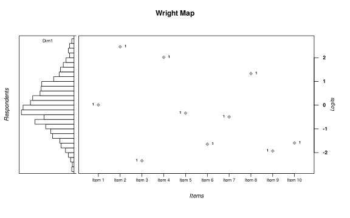
We can start to customize the Wright Map by simply relabeling its main parts using main.title, axis.logits, axis.persons, and axis.items.
wrightMap(rasch.sim.thetas, rasch.sim.thresholds,
main.title = "This is my example Wright Map",
axis.persons = "This is the person distribution",
axis.items = "These are my survey questions")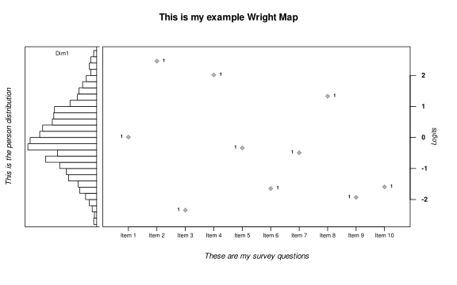
The Person Side and the Item Side
If you do not like histograms, WrightMap has the option person.side that allows you to switch between histograms (the default option: personHist) or density using the option personDens.
wrightMap(rasch.sim.thetas, rasch.sim.thresholds, person.side = personDens)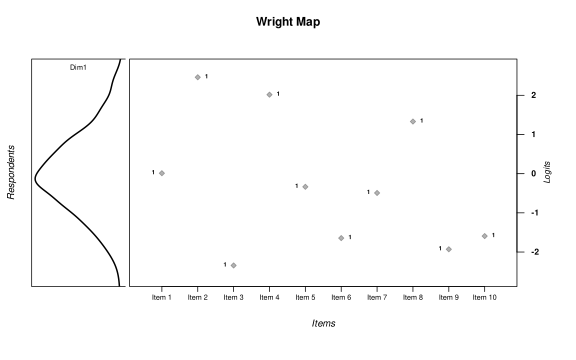
Or, you may want to change the way items are represented by using the option item.side, which offers itemModern (the default representation), itemClassic (for ConQuest-style Wright Maps), and a itemHist for a histogram summary of the items.
The itemClassic option is well suited for cases where you want to include many items using less space.
rasch.sim.thresholds.2 <- runif(150, -3, 3)
wrightMap(rasch.sim.thetas, rasch.sim.thresholds.2, item.side = itemClassic)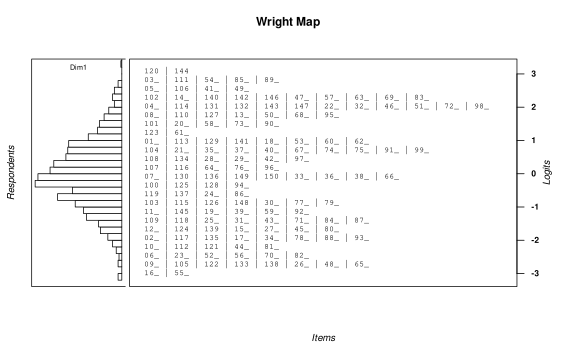
Alternatively, you can represent use a back-to-back histogram representation with itemHist (notice that in the following example we are using the option item.prop to adjust the relative sizes of the person and item side).
rasch.sim.thresholds.3 <- rnorm(150)
wrightMap(rasch.sim.thetas, rasch.sim.thresholds.2, item.side = itemHist, item.prop = 0.5)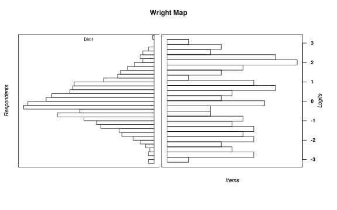
Customizing Wright Maps
Let us focus on the default item and person side representations to explore their potential customizations.
You might want to remove the label for the item difficulties by setting show.thr.lab = FALSE.
wrightMap(rasch.sim.thetas, rasch.sim.thresholds, show.thr.lab = FALSE)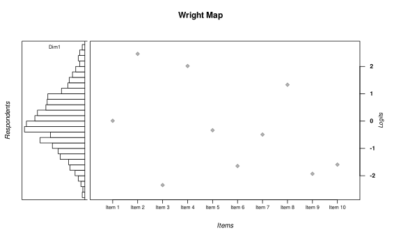
Or you might want to see just labels, by turning off symbols with show.thr.sym = FALSE.
wrightMap(rasch.sim.thetas, rasch.sim.thresholds, show.thr.sym = FALSE)Customizing Symbols
Let’s start by making all the symbols bigger with thr.sym.cex = 2.5 (default is 1).
wrightMap(rasch.sim.thetas, rasch.sim.thresholds,
show.thr.lab = FALSE, thr.sym.cex = 2.5)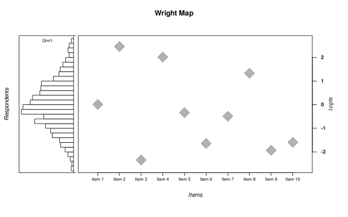
To select what kind of symbols you want to use, you can use the thr.sym.pch parameter.
wrightMap(rasch.sim.thetas, rasch.sim.thresholds, show.thr.lab = FALSE,
thr.sym.cex = 2.5, thr.sym.pch = 17)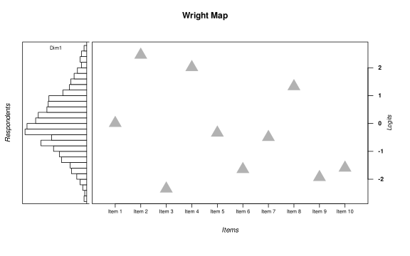
Customizing Colors and Labels
We will need some colors for the next examples.
display.brewer.pal(10, "Paired")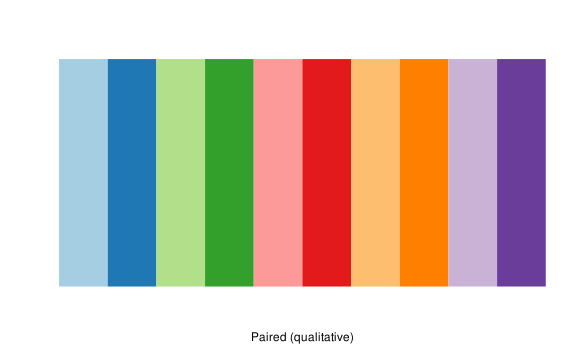
itemcolors <- brewer.pal(10, "Paired")Now, let’s use those colors in our item difficulty symbols using the thr.sym.col.fg.
wrightMap(rasch.sim.thetas, rasch.sim.thresholds, show.thr.lab = FALSE,
thr.sym.pch = 17, thr.sym.cex = 2.5, thr.sym.col.fg = itemcolors)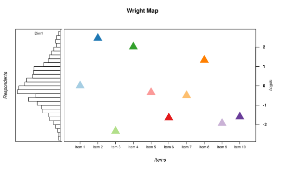
Customizing Labels
Define some item names:
itemnames <- c("Dasher", "Dancer", "Prancer", "Vixen", "Comet", "Cupid", "Donner",
"Blitzen", "Rudolph", "Olive")Now assign them to the item difficulties:
wrightMap(rasch.sim.thetas, rasch.sim.thresholds, show.thr.sym = FALSE,
thr.lab.text = itemnames)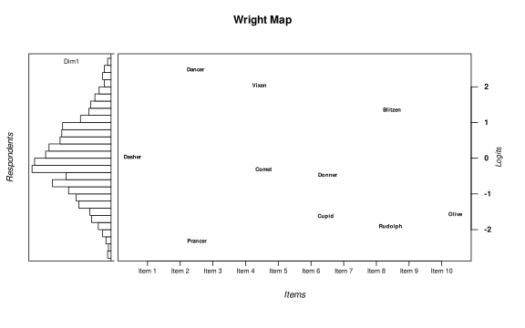
You can also control the size of the labels using the thr.lab.cex parameter.
wrightMap(rasch.sim.thetas, rasch.sim.thresholds, show.thr.sym = FALSE,
thr.lab.text = itemnames, thr.lab.cex = 1.5)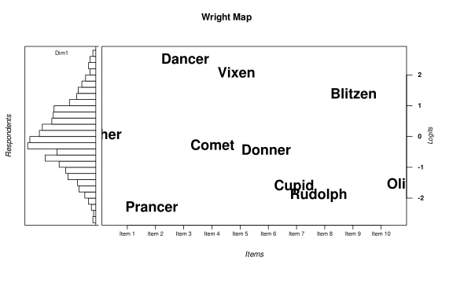
And we can of course control the colors using thr.lab.col.
wrightMap(rasch.sim.thetas, rasch.sim.thresholds, show.thr.sym = FALSE,
thr.lab.text = itemnames, thr.lab.col = itemcolors, thr.lab.cex = 1.5)Finally, if you want to go crazy, you can also change the type style using thr.lab.font. This parameter follows the R convention where 1 = plain, 2 = bold, 3 = italic, 4 = bold italic.
wrightMap(rasch.sim.thetas, rasch.sim.thresholds, show.thr.sym = FALSE,
thr.lab.text = itemnames, thr.lab.col = itemcolors,
thr.lab.cex = 1.5, thr.lab.font = c(1:4))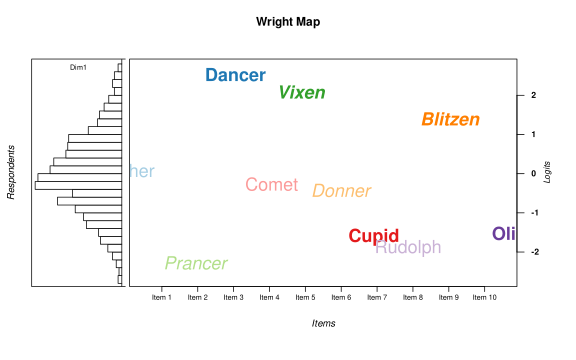